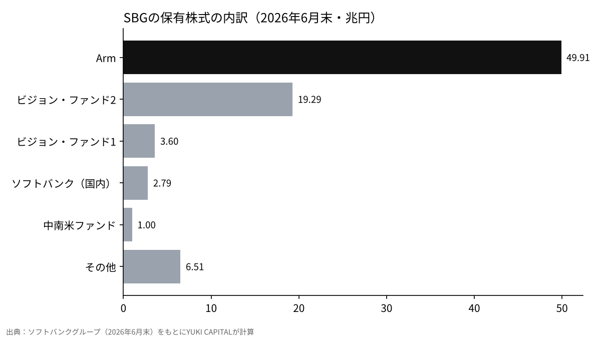
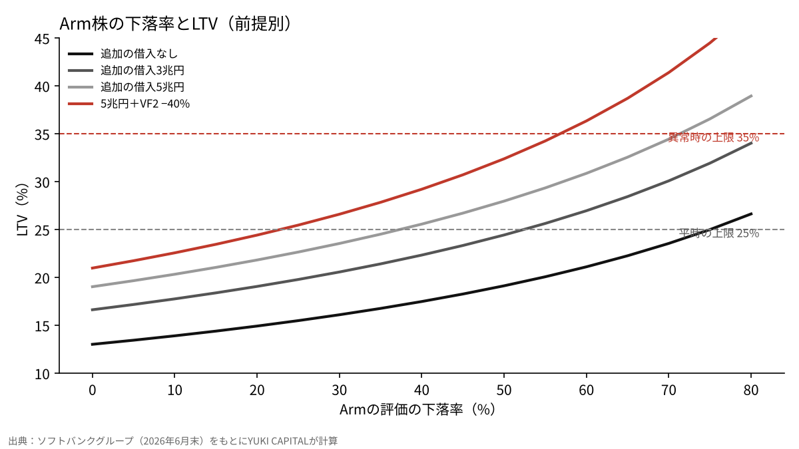

マスク氏の「タービン不払い」と民主党の議会は、ソフトバンクグループの財務をどこまで揺らすのか
2026年11月6日、イーロン・マスク氏はXで、ソフトバンクグループ（SBG）がタービンの注文の支払いを滞らせていると書いた[1]。同じ週、米国の中間選挙で民主党が上下両院の多数を取り、AIと半導体の株が大きく売られた[4][12]。
本稿の問いは、SBGの財務の物差しであるLTV（保有株式に対する純負債の比率）が、Arm株とOpenAI関連の評価、追加の借入がどれだけ動けば、SBG自身が決めた上限に近づくのか、である。
SBGが公表した2026年6月末の数字を起点に、前提を3つ動かして計算し、マスク氏の主張と議会の変化がどの経路で効くのかを確かめる。
- 6月末の数字では、Arm株の下落だけでLTVが平時の上限25%に届くには、75%の下落が要る。株価だけなら、まだ余裕は大きい。
- 効くのは借入である。新しい借入が5兆円になると、Armが37%下がるだけで25%に届く。
- マスク氏の主張と民主党の議会は、どちらも直接LTVを動かすわけではない。前者は資金の調達の条件を、後者はArmを含む半導体の株価を通じて、間接に効いてくる。見るべき数字は、決算で示されるLTVと、新しい借入の額の2つである。

問いと背景
マスク氏の投稿は、データセンター向けの融資をまとめて売りに出した売り手がいるという市場の話題への返信だった。その束には、ニューメキシコ州のスターゲートの拠点に関わる2,500万ドルの融資が含まれていたと報じられている[1]。投稿には金額も根拠も示されておらず、報道の時点でSBGは公に答えていない[1]。同じ日、SBGの株価は取引時間中に12%を超えて下げた[1]。
スターゲートは、OpenAI・SBG・オラクルなどが米国でAIの計算基盤を作る計画で、2025年1月の発表では4年間で5,000億ドルを投じるとされ、SBGは資金面の責任を負うとされた[2]。発表の翌日、マスク氏は、SBGが確保した資金は100億ドルを大きく下回ると書いた[3]。今回の投稿は、その主張の延長にある。SBGのOpenAIへの出資は、報道では300億ドルを超える可能性があり、その一部をArm株を担保にした50億ドルの借入でまかなう計画だと伝えられた[11]。
用語を整理する。LTVはLoan to Valueの略で、SBGは「純負債÷保有株式の価値」と定義している[6]。マージンローンは、保有株式を担保にした借入で、担保の株価が下がると追加の担保や返済を求められる。SBGはArm株を担保にした借入を、保有株式の側から差し引いて計算している[6]。NAV（時価純資産）は、保有株式の価値から純負債を引いた額である。ビジョン・ファンドは、SBGが運営する未上場企業などへの投資の器で、2号ファンドがOpenAIへの投資を持つ[7]。
政治の側では、11月3日の中間選挙で民主党が下院と上院の多数を取った[4]。テキサス州では、当選した民主党の知事がデータセンターの新しい計画の停止と税の優遇の終了を求めてきたと報じられている[5]。下院で監視の委員会を率いる議員も、マスク氏をめぐる調べを強める姿勢を見せた[5]。
データと方法
起点の数字は、SBGが公表した株主価値の資料（2026年6月末時点）から取った[6]。保有株式は83.11兆円、純負債は10.81兆円、LTVは13.0%、時価純資産（NAV）は72.30兆円である。保有株式のうちArmは49.91兆円で、これはマージンローン相当の3.22兆円を差し引いた後の値である。ビジョン・ファンド2は19.29兆円で、OpenAIへの投資はこの中に入る[7][8]。
財務方針として、SBGはLTVを平時は25%未満に保ち、異常時でも35%を上限とすると示してきた[9]。格付け会社も、この比率と手元資金を評価の軸に置いている[10]。
計算は単純にした。Armの評価が下がる率をd、ビジョン・ファンド2の評価が下がる率をe、新しい借入をXとすると、LTV＝（10.81＋X）÷（83.11−53.13×d−19.29×e）になる。53.13兆円は、差し引く前のArmの評価額（49.91＋3.22）で、担保の借入は株価が下がっても減らないと置いた。為替は、資料が使った1ドル162.39円のままにした[6]。ビジョン・ファンド2の40%下落は、OpenAIを含む未上場株の評価の見直しを置いたものである。同じ週には、Anthropicの上場の評価額が1.5兆ドルから約1兆ドルへ下がりうると報じられ、AIの未上場株の値段が3割ほど見直される例が出ていた[14]。
結果

起点のLTVは13.0%で、25%の線まで12ポイントの余裕がある。6月末の1株あたりNAVは12,686円で、株価5,963円の2倍を超えていた[6]。市場は、保有株式の価値をそのまま株価に映していなかったことになる。保有株式の60%をArmが占め、ビジョン・ファンド2が23%で続く。SBGの財務の余裕は、Arm1社の株価にほぼ重なっていることになる。
| 前提 | LTV |
|---|---|
| 起点（2026年6月末） | 13.0% |
| Armが20%下落 | 14.9% |
| Armが40%下落 | 17.5% |
| Armが60%下落 | 21.1% |
| Armが40%下落＋ビジョン・ファンド2が40%下落 | 20.0% |
Arm株だけで25%に届くには、Armの評価が75%下がる必要がある。35%に届くには、ほぼ全損に近い98%の下落が要る。株価の下落だけでは、方針の上限にはなかなか届かない。
感度分析

効いてくるのは、借入が増える場合である。新しい借入が3兆円なら、Armが40%下がりビジョン・ファンド2が40%下がると、LTVは25.5%になり平時の線を超える。5兆円なら、同じ条件で29.2%になる。
| 追加の借入 | Arm 0% | Arm −20% | Arm −40% | Arm −60% |
|---|---|---|---|---|
| 0兆円 | 13.0% | 14.9% | 17.5% | 21.1% |
| 3兆円 | 16.6% | 19.1% | 22.3% | 27.0% |
| 5兆円 | 19.0% | 21.8% | 25.6% | 30.9% |
| 5兆円＋VF2 −40% | 21.0% | 24.4% | 29.2% | 36.3% |
5兆円を借りたうえで、ビジョン・ファンド2が40%下がると、Armが60%下がった時点でLTVは36.3%になり、異常時の上限35%を超える。追加の借入が5兆円のとき、Arm株だけで25%に届く下落率は37%まで縮む。
為替も効く。資料は1ドル162.39円で計算しているが、11月6日のドル円は158円台だった[13]。外貨建ての保有が多いほど、円高は保有株式の円の価値を減らし、LTVを押し上げる。国内のソフトバンク株（2.79兆円）以外をドル建てとみなし、純負債を円のまま置くと、158円ではLTVは13.4%、150円では14.0%になる。為替だけの影響は、株価と借入に比べると小さい。
考察
反対の見方から取り上げる。LTV13.0%は方針の上限から遠く、NAVは72.30兆円ある。マスク氏はAIの会社xAIを率いる競合の立場にあり、主張には金額も裏付けも示されていない[1]。この見方に立てば、今回の下げは評判の揺れであって、財務の揺れではない。
それでも、LTVは株価と借入の2つで決まる数字である。OpenAIへの追加の出資や、スターゲートへの資金を借入でまかなえば、分子の純負債が増える。Arm株を担保にした借入は、Armが下がるほど追加の担保を求められる形になっている[11]。マスク氏の主張が事実かどうかより、資金の出し方が借入に寄るかどうかが、LTVを動かす。
民主党の議会の影響は、まだ法律になっていない。ただ、AIや半導体の会社への規制の懸念は、選挙の翌日に半導体の株価を大きく下げた[12]。Armは半導体の設計の会社であり、その株価を通じて、SBGの保有株式の6割に届きうる。
限界も書いておく。起点は6月末の数字で、11月の株価の下落は入っていない。OpenAIの評価はビジョン・ファンド2の中で一括して扱い、個別の額は分けていない。新しい借入の3兆円と5兆円は仮の置き方で、SBGの計画の数字ではない。LTVの定義はSBG自身のもので、格付け会社は別の調整を加えて見る場合がある[10]。
答え合わせの基準は3つある。11月10日の決算で示されるLTVが20%を超えるか。OpenAIとスターゲートへの資金の出し方が、借入に寄るか。Arm株が6月末から40%以上下がった状態が続くか。この3つのうち2つがそろえば、本稿の結論は書き換えが要る。
結論
6月末の数字では、Arm株の下落だけでLTVが平時の上限25%に届くには、75%の下落が要る。株価だけなら、まだ余裕は大きい。
効くのは借入である。新しい借入が5兆円になると、Armが37%下がるだけで25%に届く。
マスク氏の主張と民主党の議会は、どちらも直接LTVを動かすわけではない。前者は資金の調達の条件を、後者はArmを含む半導体の株価を通じて、間接に効いてくる。見るべき数字は、決算で示されるLTVと、新しい借入の額の2つである。
僕はこう見ている
マスク氏は、スターゲートが立ち上がった時から、SBGはそんなに資金を持っていないと言ってきた。今回の投稿も、その流れの上にあると僕は見ている。僕がいちばん危ないと思うのは、OpenAIへの出資と、Arm株を担保にした借入である。Armが下がると、SBGは追加で担保を入れなければならず、かなり大変になると思う。僕はSBGの株を持っていないが、11月10日の決算には興味がある。そこで示されるLTVと借入の中身を見て、この記事の数字を確かめたい。
参考文献
- OfficeChai, "Softbank Is Defaulting On Its Turbine Orders, Claims Elon Musk", 2026-11-07, https://officechai.com/ai/softbank-is-defaulting-on-its-turbine-orders-claims-elon-musk/
- OpenAI, "Announcing The Stargate Project", 2025-01-21, https://openai.com/index/announcing-the-stargate-project/
- Axios, "Musk throws shade at Stargate", 2025-01-22, https://www.axios.com/2025/01/22/stargate-elon-musk-trump-altman-openai-project
- ABC7, "Midterm election 2026 live results: Dems take back Congress", 2026-11-04, https://abc7news.com/live-updates/midterm-elections-2026-live-updates-election-results-key-races-us/20001292/entry/20013786/
- The Star（ロイター配信）, "Elon Musk's business empire braces for Democratic wave as Texas flips blue", 2026-11-04, https://www.thestar.com.my/news/world/2026/11/04/elon-musk039s-business-empire-braces-for-democratic-wave-as-texas-flips-blue
- ソフトバンクグループ, 「株主価値（SOTP）・LTV」（2026年6月末時点）, https://group.softbank/ir/stock/sotp
- ソフトバンクグループ, 「2027年3月期 第1四半期 決算」, 2026-08-06, https://group.softbank/news/ir/20260806_1
- ソフトバンクグループ, 「決算データシート 2027年3月期 第1四半期」, 2026-08, https://group.softbank/media/Project/sbg/sbg/pdf/ir/presentations/2026/earnings-datasheet_q1fy2026_02.pdf
- ソフトバンクグループ, 「統合報告書 2022（財務戦略）」, https://group.SoftBank/system/files/pdf/ir/financials/annual_reports/annual-report_fy2022_03_ja.pdf
- 日本格付研究所（JCR）, 「ソフトバンクグループ 格付けレポート」, https://www.jcr.co.jp/download/3d6b75332f9b6de2b66ad7f2a635ada5ebea0770d0e8e2a850/23d1586.pdf
- Tom's Hardware, "SoftBank is seeking $5 billion loan to invest in OpenAI, plans to use Arm shares as collateral", https://www.tomshardware.com/tech-industry/artificial-intelligence/softbank-is-seeking-usd5-billion-loan-to-invest-in-openai-plans-to-use-arm-shares-as-collateral-rapid-ai-expansion-continues-investment-could-top-usd30-billion
- investingLive, "Nikkei drops 3% as Democratic midterm gains hit AI and chip stocks", 2026-11-04, https://investinglive.com/stock-market-update/nikkei-drops-3-as-democratic-midterm-gains-hit-ai-and-chip-stocks/
- 日本銀行, 「時系列統計データ（為替）」, https://www.stat-search.boj.or.jp/
- Decrypt（Yahoo Finance 配信）, "Anthropic IPO Valuation Could Be Slashed in Half to $1T After AI Stock Rout: Report", 2026-11-07, https://finance.yahoo.com/markets/stocks/articles/anthropic-ipo-valuation-could-fall-162858848.html
図はYUKI CAPITALが作成。トップ画像：Tom Arran（Unsplash）
日々の数字と判断は、Xで記録している。